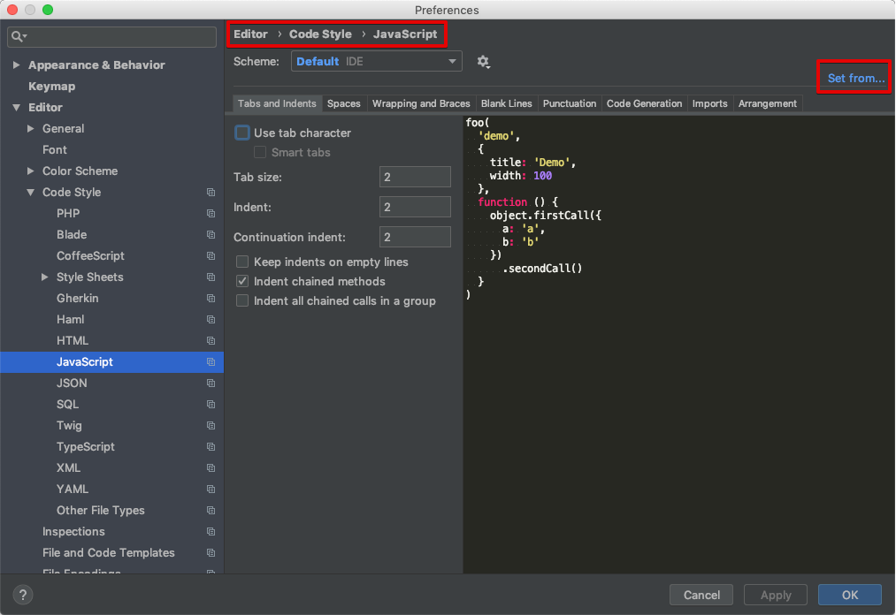

ビルドしてみる
Node.js は、パッケージ管理に npm というパッケージマネージャーを用います。
Facebook 製の yarn というパッケージマネージャーもあります。 npm のできの悪さに業を煮やした Facebook が代替を作った、という経緯がありますが、最近は npm も改善されています。
package.json の作成
npm コマンドで作成するか、PHPStorm の新規ファイル作成で package.json を選択してください。
npm init
package のインストール
ESLint のインストール
npm install --save-dev eslint eslint-config-standard eslint-plugin-import eslint-plugin-node eslint-plugin-promise eslint-plugin-standard
Babel、webpack のインストール
npm install --save-dev @babel/core @babel/preset-env webpack babel-loader
ESLint の設定
プロジェクトフォルダに .eslintrc を作成、以下の内容を記述
{
"extends": "standard",
"plugins": [
"standard"
]
}
PHPStorm で ESLint を有効化します。
PHPStorm の Editor のフォーマットも修正しておきます。

ESLint が効いているか確認する
以下のファイルを作成して、簡単な ES2015 コードを書いてみて、ESLint が効いているかどうかをチェックします。
src/index.js
const conf = require('./config')
console.log(conf.name)
src/config.js
module.exports = {
name: 'GitHub'
}
セミコロンをつけるとエラーになります。 また、package.json に
"scripts": {
"lint": "eslint src"
},
を追加すると、CLI で npm run lint のように実行できます。
以下のように直接実行しても OK です。
- Win:
node_modules\.bin\eslint src- Mac:
./node_modules/.bin/eslint src
Babel、webpack の設定
以下の内容で .babelrc を作成します。
{
"presets": [
"@babel/preset-env"
]
}
以下の内容で webpack.config.js を作成します。
module.exports = {
module: {
rules: [
{
test: /\.js$/,
loader: 'babel-loader'
}
]
}
}
package.json の scripts に以下を追記します。
"build:dev": "webpack --mode development",
"build:prod": "webpack --mode production"
ビルドしてみる
package.json の build:dev の行で run するか、CLI で npm run build:dev してみます。
dist/main.js が生成されれば成功です。